The same scenario (3 stations, 7 sessions, 2 need you) in each direction. Tap a picture for full size. The baseline is the board today.
Sessions are flight strips in station bays. Carrier-deck jersey colors as meaning: yellow needs you, green working, purple usage, red hazard. Mona Sans (width axis), dark first.
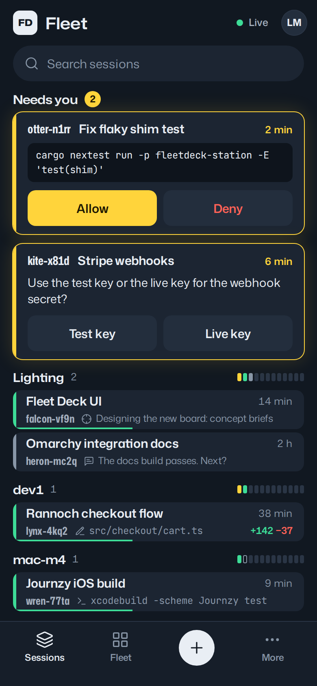
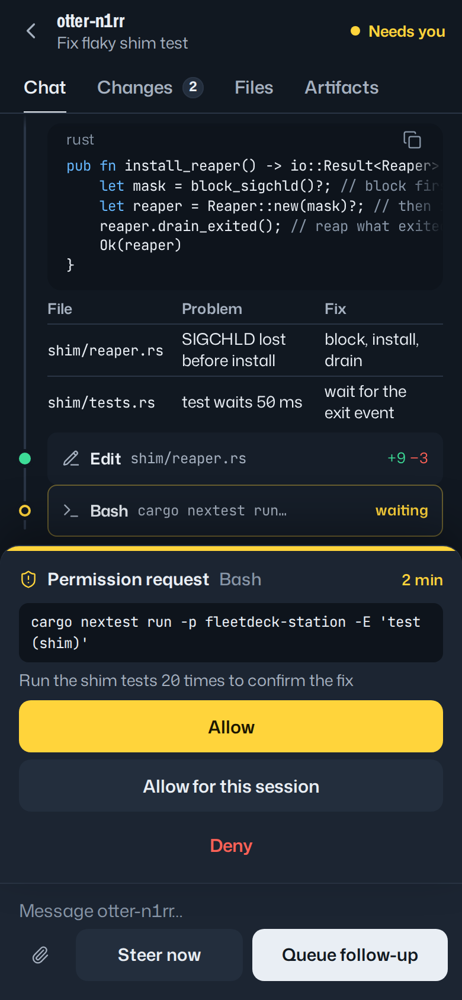
Quiet neutral graphite, one signal color, list rows with status glyphs, a properties panel, New session as a modal. Geist. The low-risk modern option.
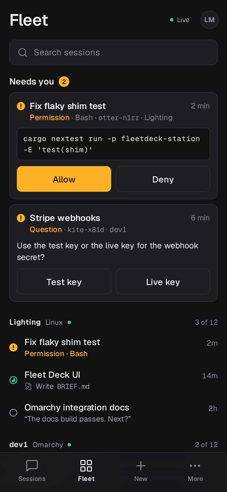
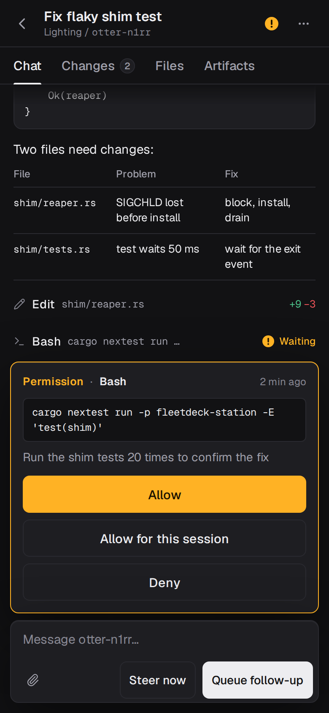
Light first and colorful: each station owns a hue; top bar, a hero line, station lanes side by side, live diff next to the chat. Bricolage Grotesque + Instrument Sans.
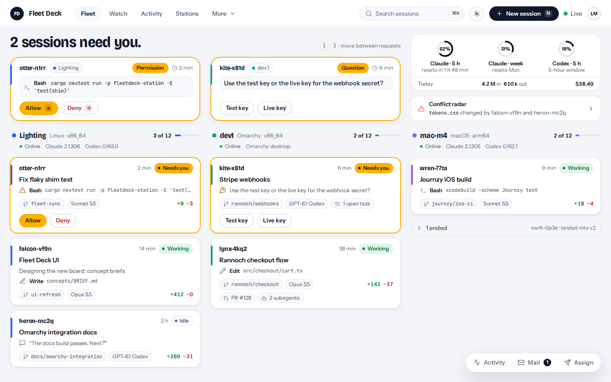
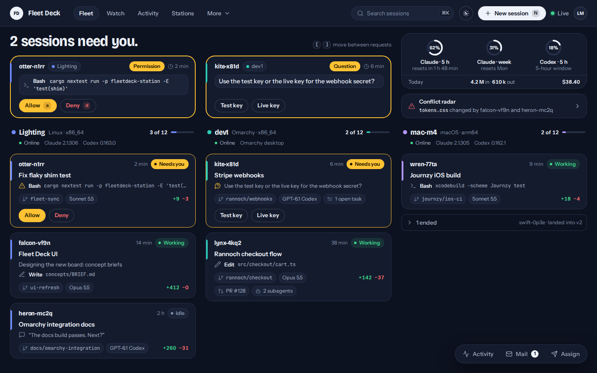
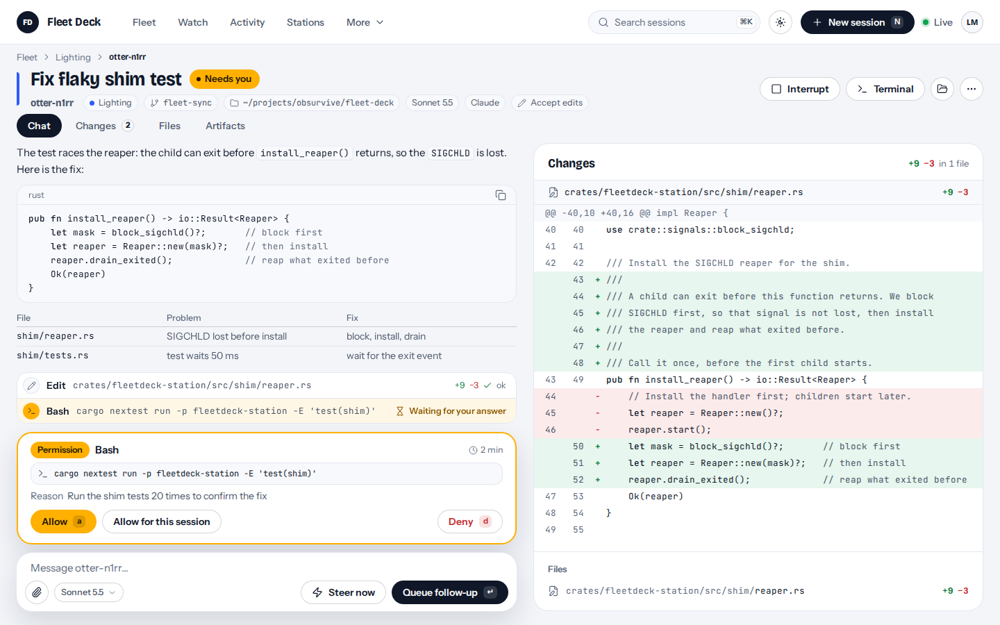
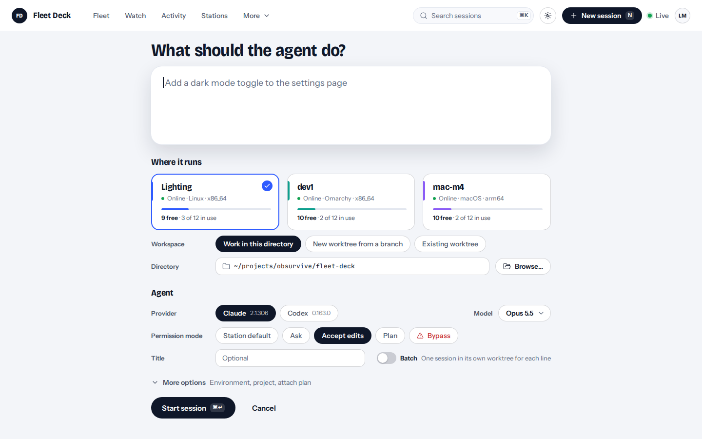
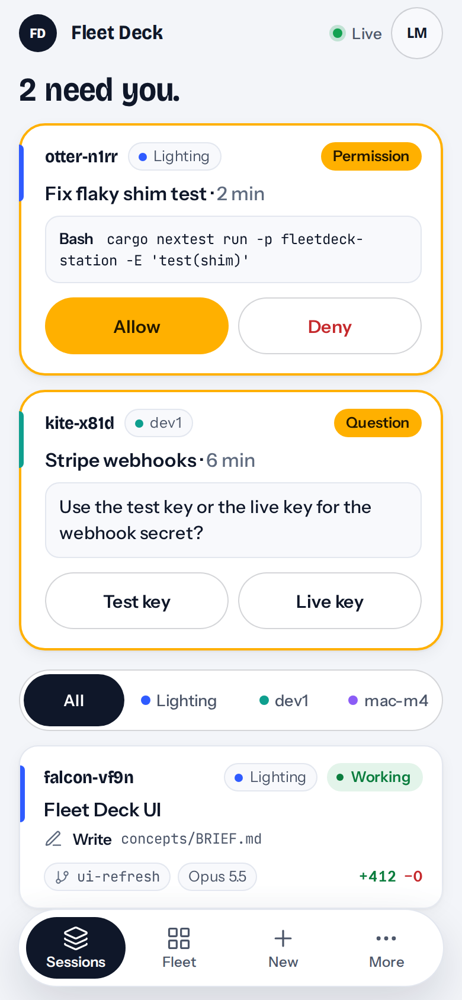
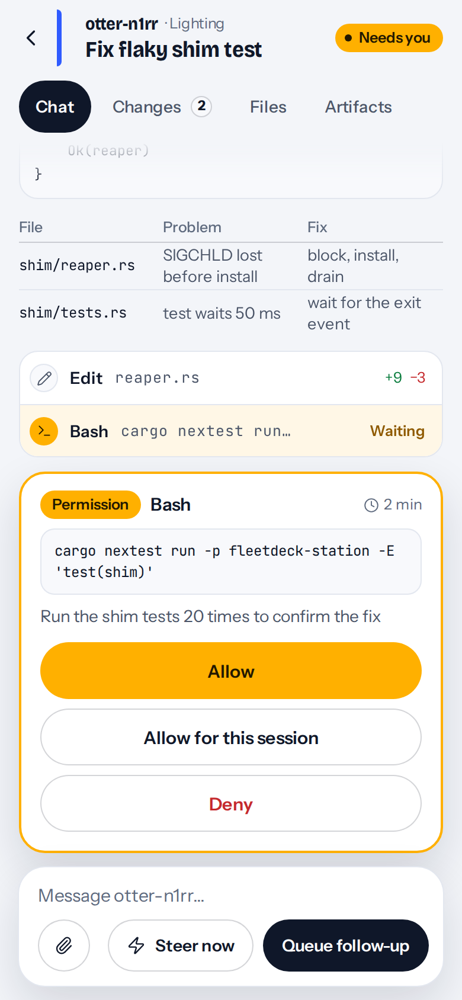
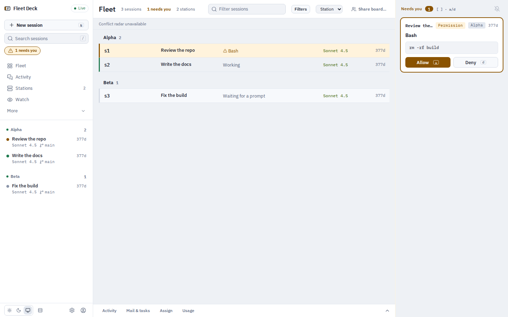
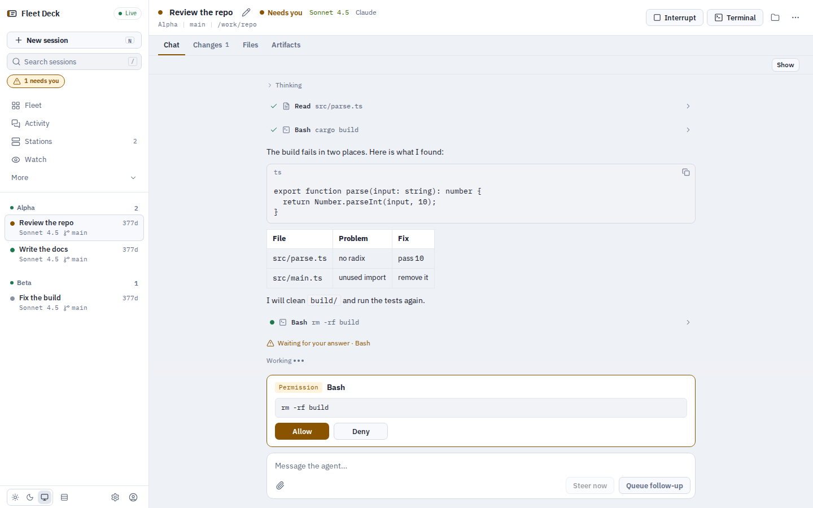
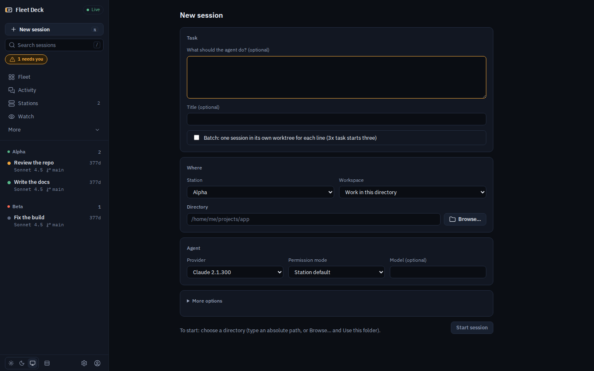
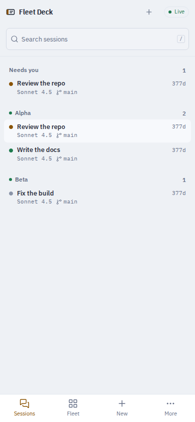
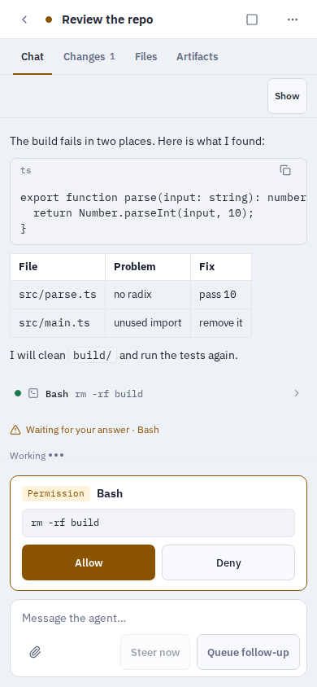